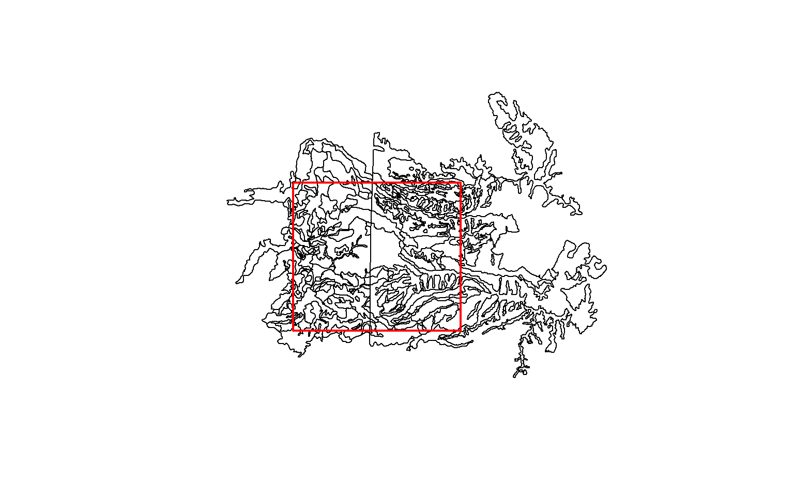

mapunit_geom_by_ll_bbox.RdFetch map unit geometry from the SDA website by WGS84 bounding box.
mapunit_geom_by_ll_bbox(bbox, source = 'sda')
| bbox | a bounding box in WGS coordinates |
|---|---|
| source | the source database, currently limited to soil data access (SDA) |
The SDA website can be found at http://sdmdataaccess.nrcs.usda.gov. See examples for bounding box formatting.
A SpatialPolygonsDataFrame of map unit polygons, in WGS84 (long,lat) coordinates.
http://casoilresource.lawr.ucdavis.edu/
It appears that SDA does not actually return the spatial intersecion of map unit polygons and bounding box. Rather, just those polygons that are completely within the bounding box / overlap with the bbox. This function requires the `rgdal` package.
# fetch map unit geometry from a bounding-box: # # +------------- (-120.41, 38.70) # | | # | | # (-120.54, 38.61) --------------+ # \donttest{ if(require(sp) & require(rgdal)) { # basic usage b <- c(-120.54,38.61,-120.41,38.70) x <- try(mapunit_geom_by_ll_bbox(b)) # about 20 seconds if(!inherits(x,'try-error')) # note that the returned geometry is everything overlapping the bbox # and not an intersection... why? plot(x) rect(b[1], b[2], b[3], b[4], border='red', lwd=2) # get map unit data for matching map unit keys in.statement <- format_SQL_in_statement(unique(x$MUKEY)) q <- paste("SELECT mukey, muname FROM mapunit WHERE mukey IN ", in.statement, sep="") res <- SDA_query(q) } else { message('could not download XML result from SDA') }#> OGR data source with driver: GML #> Source: "C:\Users\Dylan.Beaudette\Documents\RtmpgbqL6F\file341c928233e.gml", layer: "mapunitpoly" #> with 197 features #> It has 8 fields#># }